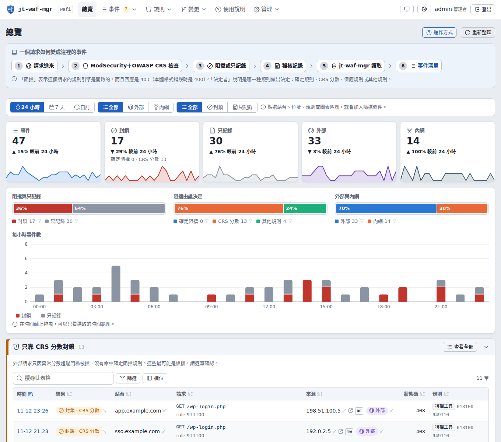
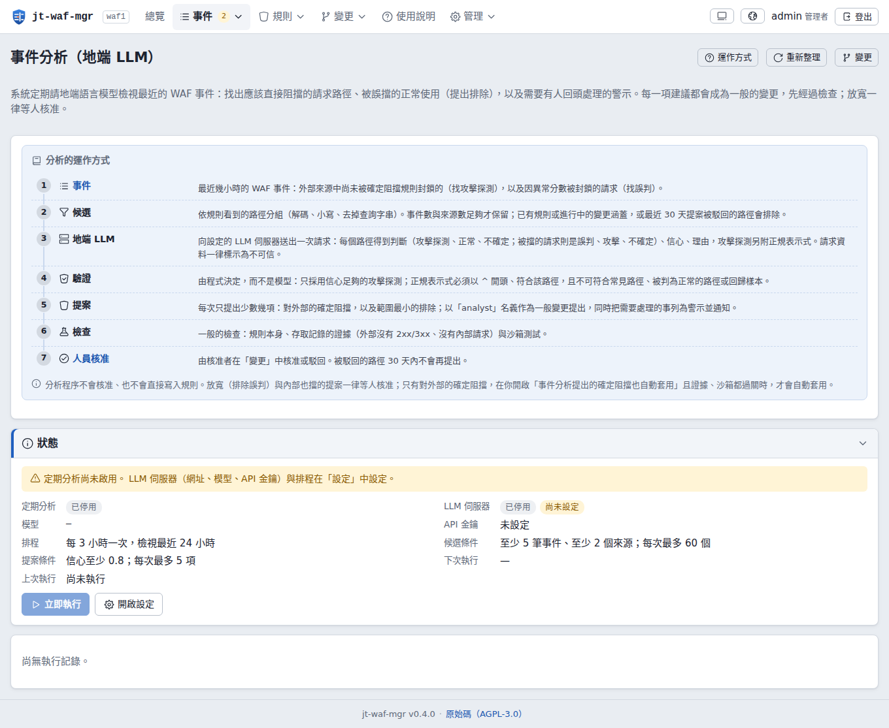
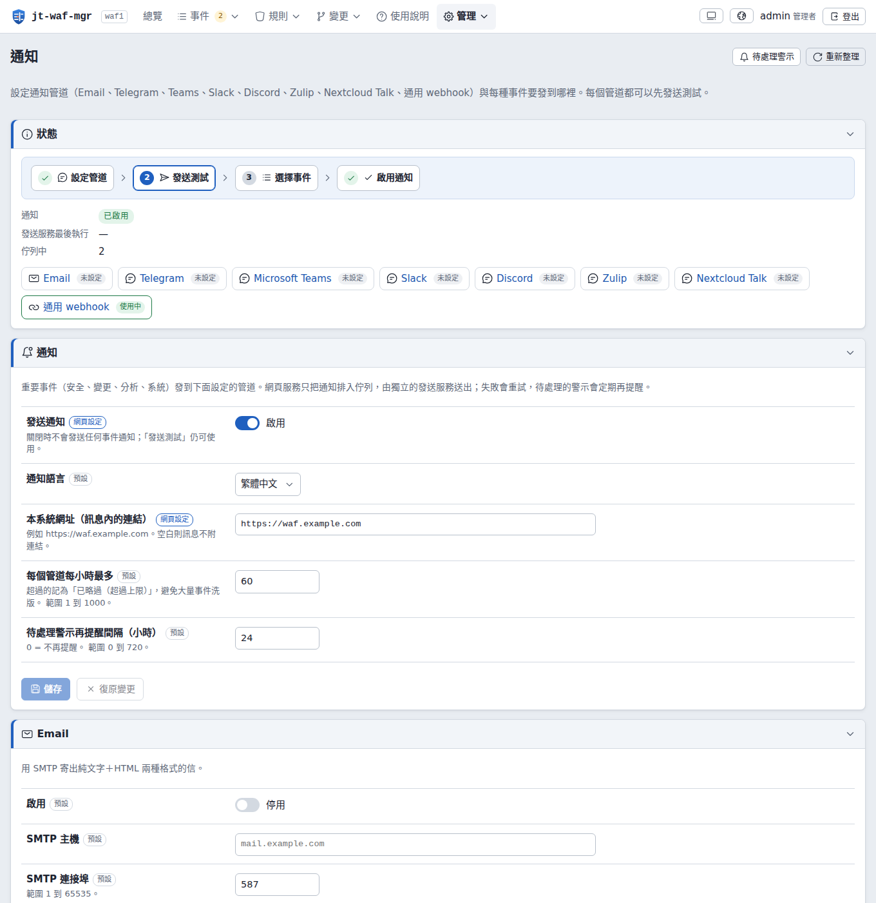
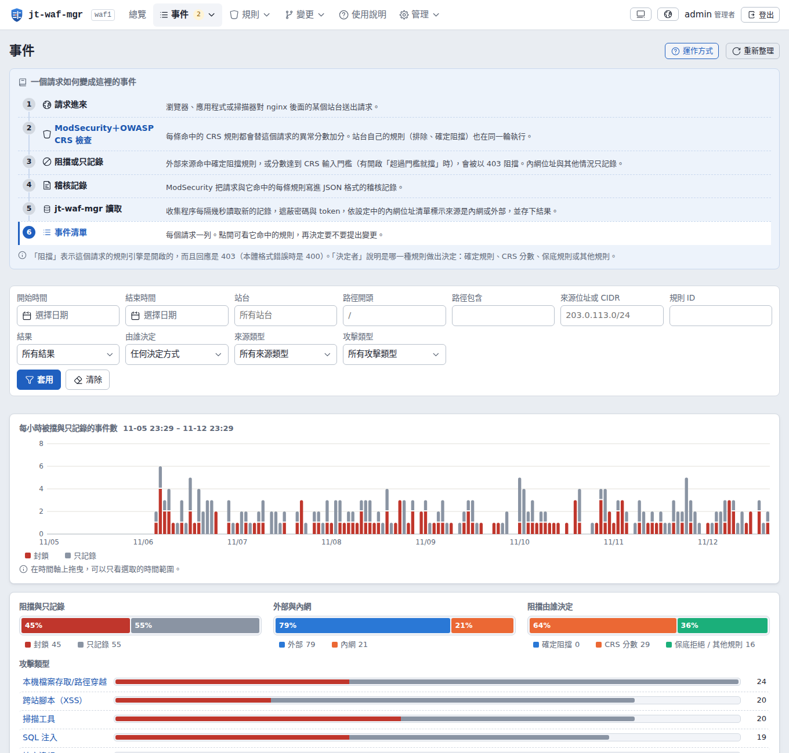
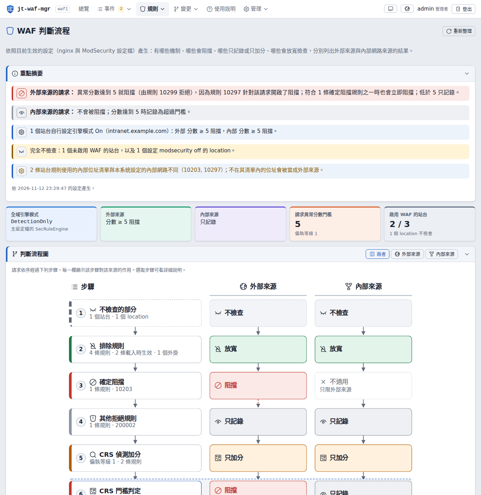
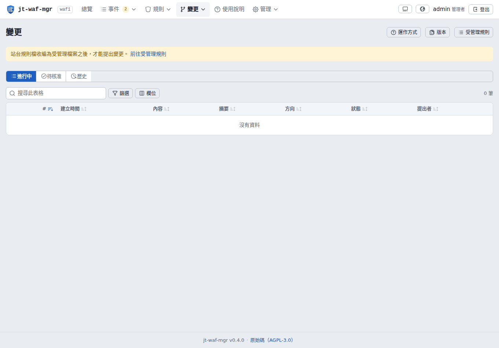
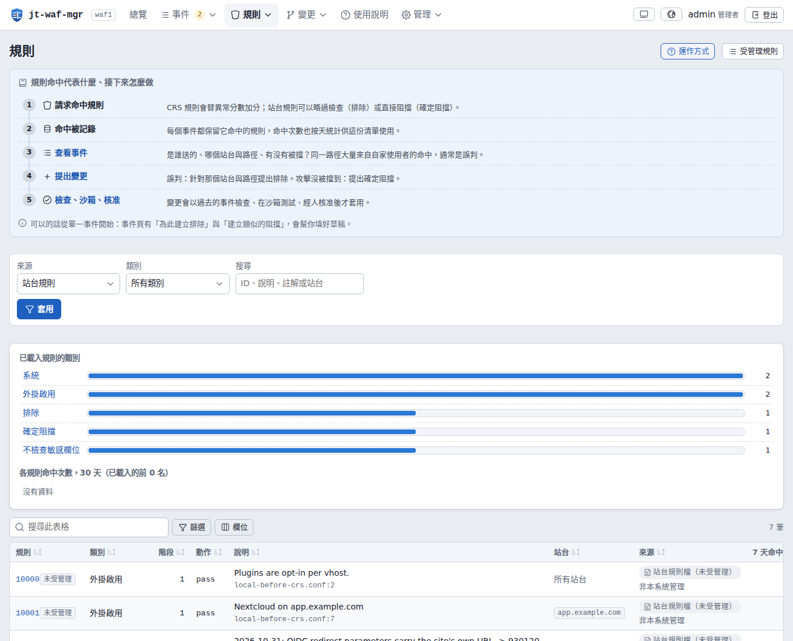
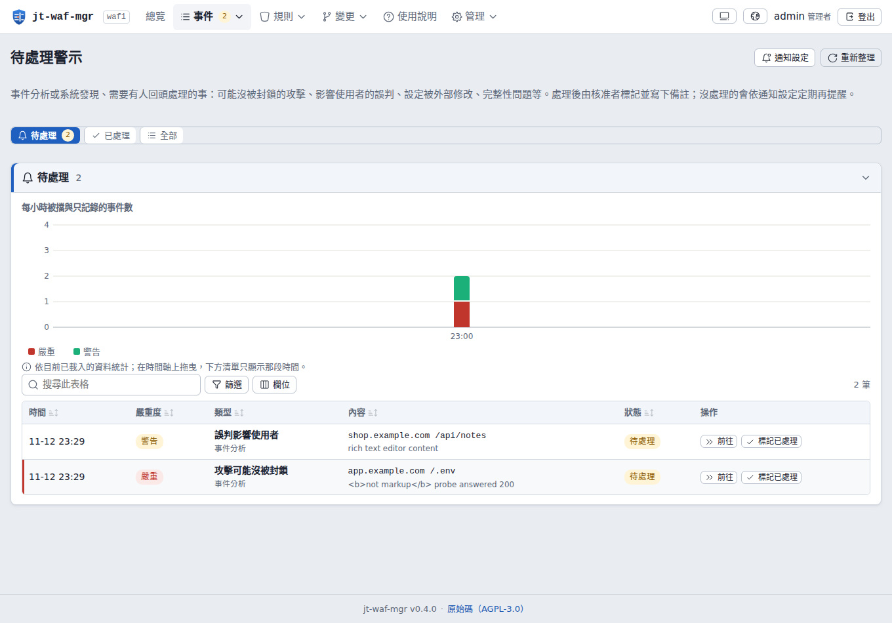
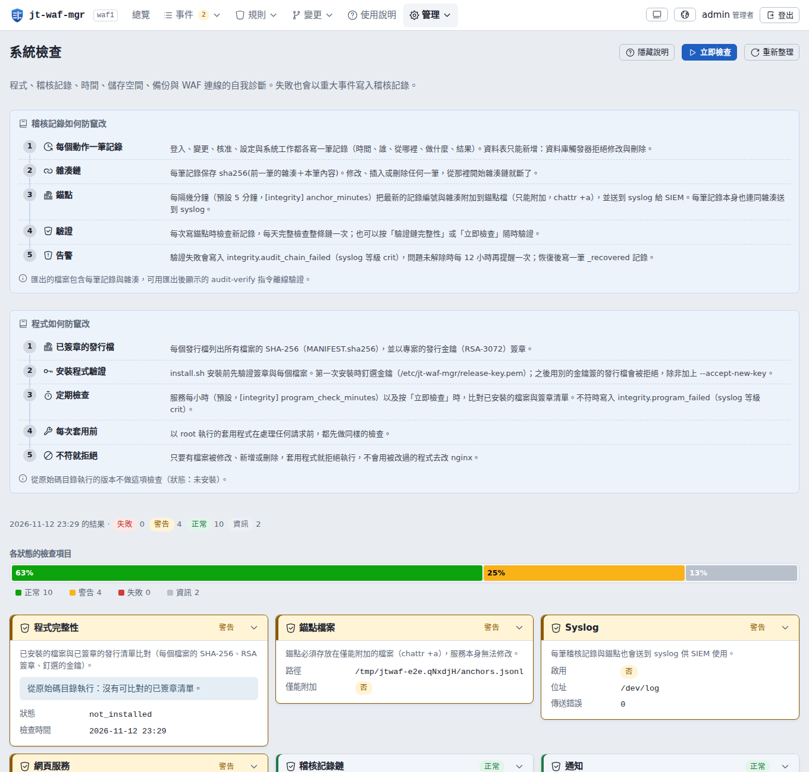
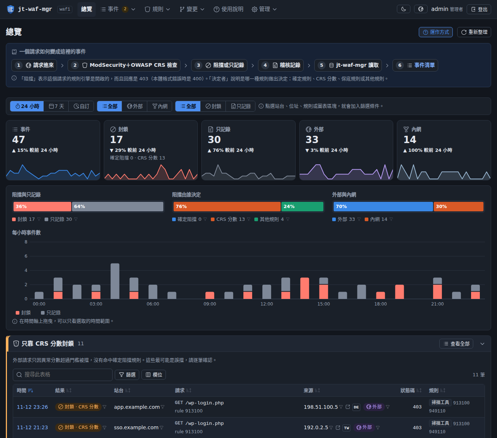

# verify, unpack, install openssl dgst -sha256 -verify release-key.pem -signature jt-waf-mgr-0.4.0.tar.gz.sig jt-waf-mgr-0.4.0.tar.gz tar xzf jt-waf-mgr-0.4.0.tar.gz && cd jt-waf-mgr-0.4.0 sudo ./install.sh sudo jt-waf-mgr check sudo jt-waf-mgr user add alice --role admin # later: upgrade with backup and automatic rollback sudo ./upgrade.sh --check && sudo ./upgrade.sh